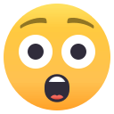

Jedu domů autobusem. Autobus je přeplněný, takže se vzdám ražení lístku a chci poprosit paní přede mnou, aby mi orazila. Ale jak ji nejlépe oslovím. Budu jí tykat anebo vykat? Na předposlední zastávce nevystoupila, takže jede až na zastávku poslední. Pořádně si ji prohlížím. Má s sebou láhev vína, takže jede určitě k nějakému muži.
Ta láhev není zrovna z nejlevnějších, takže to musí být hezký muž. U nás na poslední zastávce bydlí ale jen dva hezcí muži, můj muž a můj milenec. K mému milenci nemůže jet, protože tam jedu já. Takže jede k mému muži.
Můj muž má dvě milenky - Katrin a Andreu, Katrin je na dovolené.
Takže říkám "Andreo, můžeš mi prosím orazit lístek?"
"Ahoj, jasně můžu, odkud mě znáš?"
